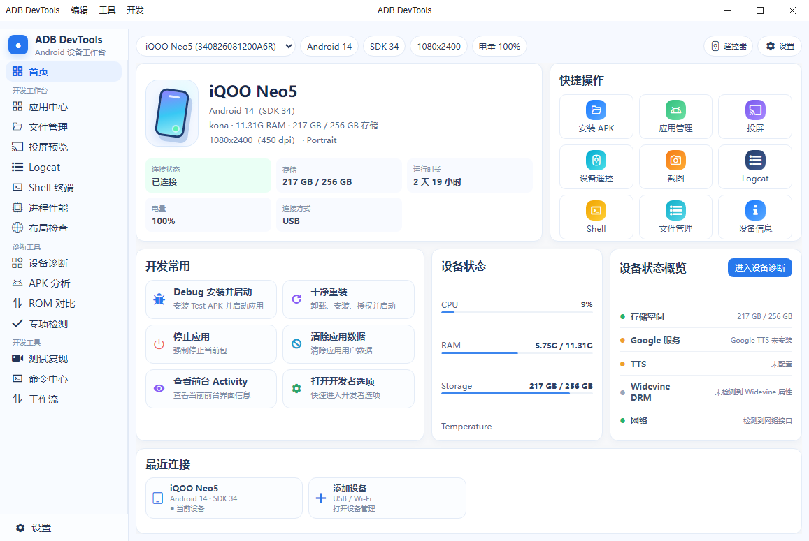
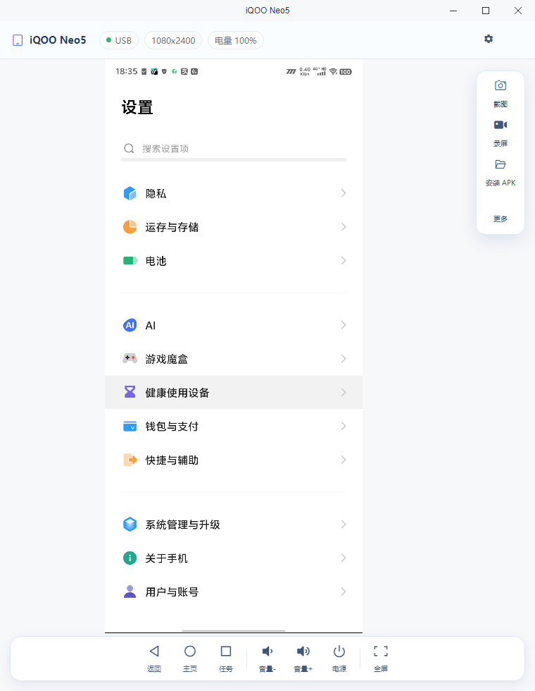
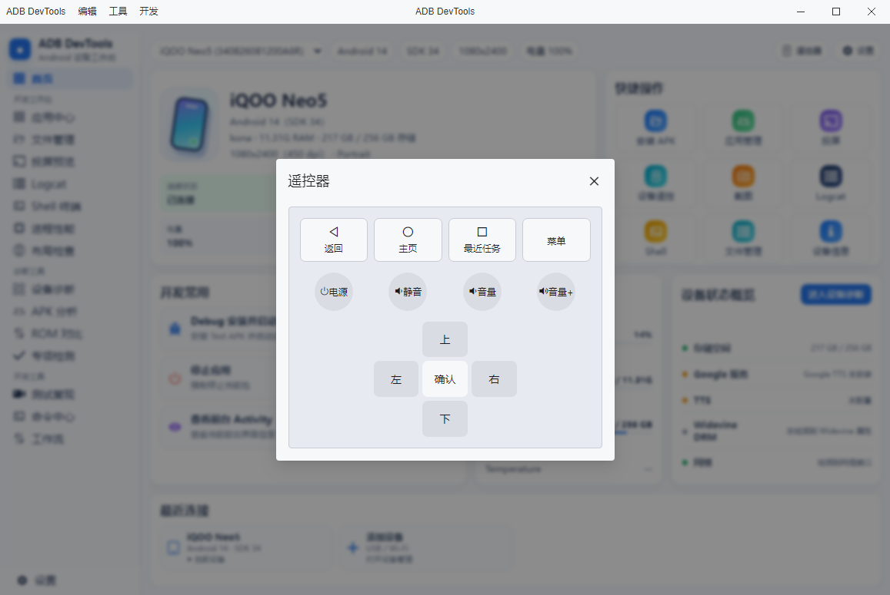
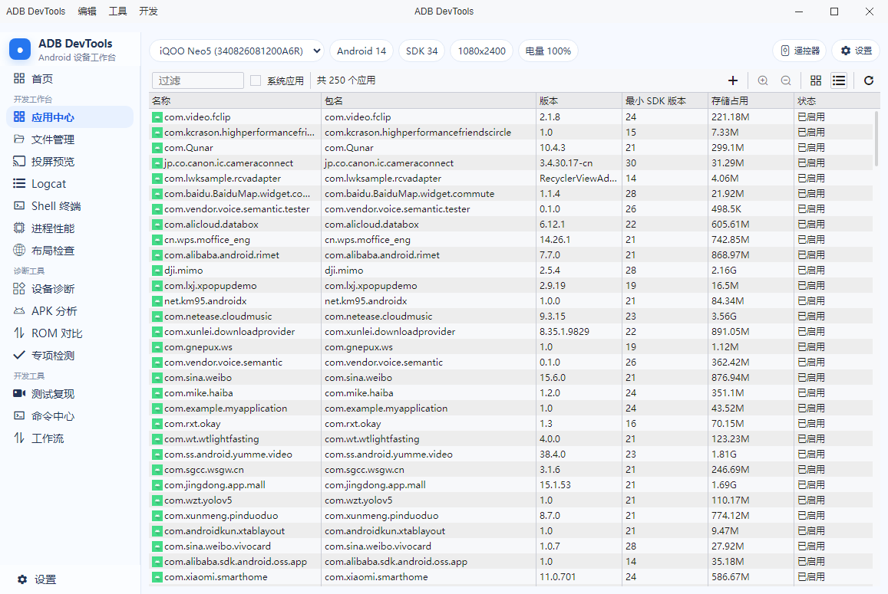
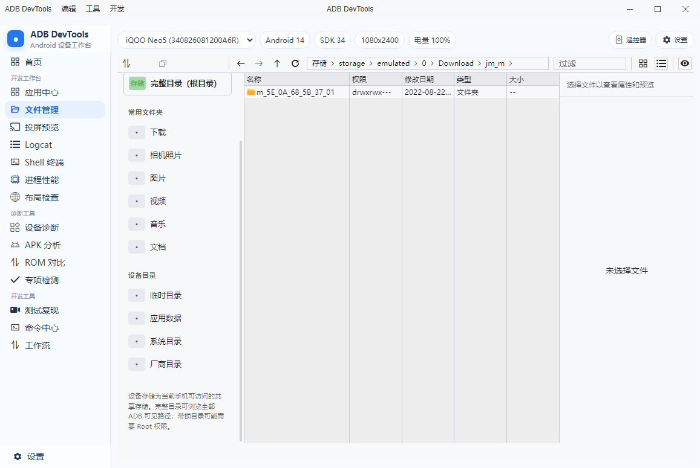
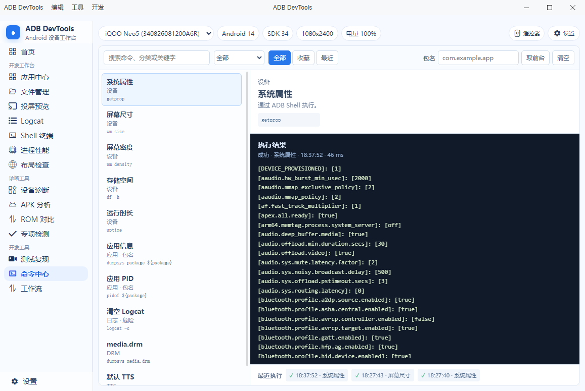
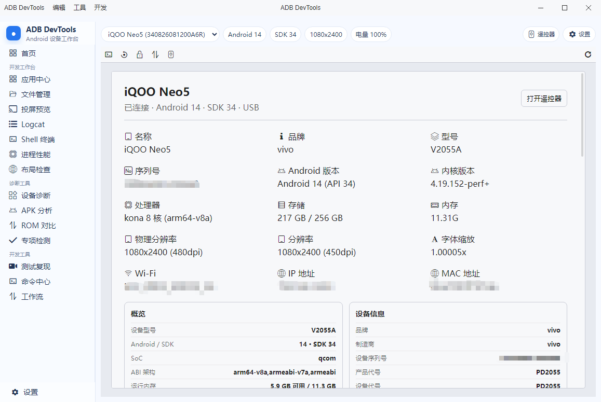
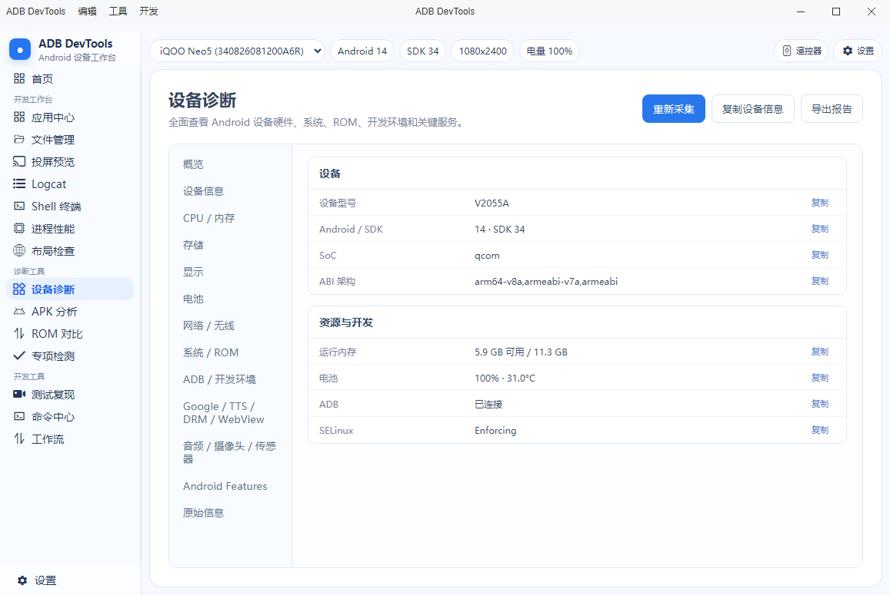
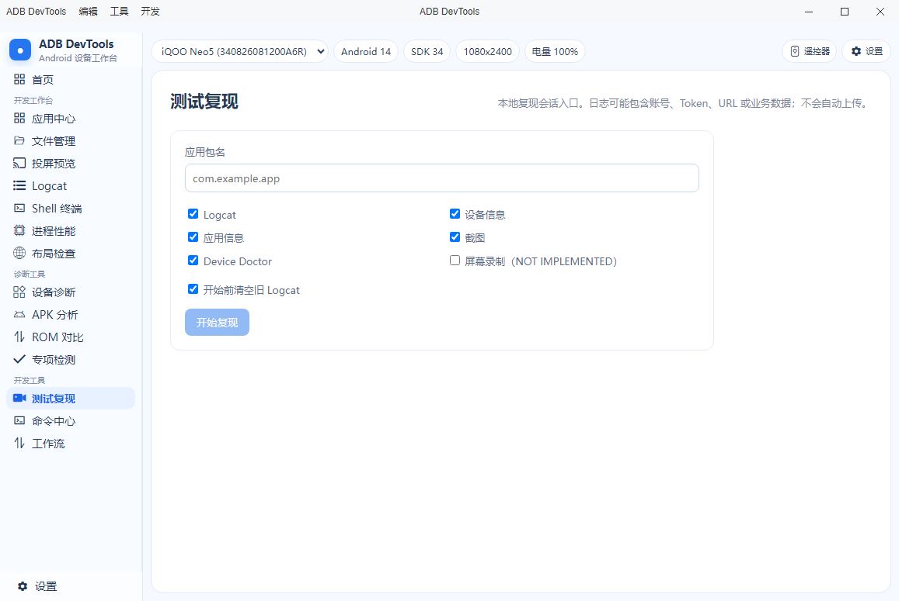

连接与设备概览
USB / Wi‑Fi 连接，查看型号、系统、分辨率、电量、存储和最近设备。
连接、投屏、应用、文件、诊断与命令执行，集中在一个面向开发、测试和设备维护的工作台。
完整能力
从设备接入到问题复现，常用信息和操作集中在一个清晰、稳定的桌面工具中。
USB / Wi‑Fi 连接，查看型号、系统、分辨率、电量、存储和最近设备。
实时投屏、导航、电源、音量、截图和录屏，预览与操作分区清晰。
大量应用快速加载，查看详情、启动、卸载、导出 APK、清理缓存与存储。
浏览完整设备目录，支持 Grid / List、多选、批处理和受限目录提示。
搜索、分类、收藏、最近执行和结果面板，连续调试更高效。
采集硬件、系统、存储、网络、DRM、TTS 等信息，辅助跨 ROM 排障。
布局检查、专项检测、前台 Activity 和 UI 自动化状态快速确认。
Logcat、进程、CPU、内存、存储、温度和网络状态集中查看。
测试过程自动归档，结合 ROM 对比和工作流重复执行常见任务。
真实界面截图
以下截图来自当前版本，展示首页、投屏、应用、文件、命令与诊断等真实界面。









最新版本
正在读取版本信息…